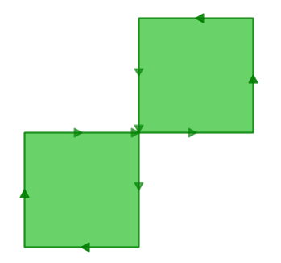

25. Validity¶
In 90% of the cases the answer to the question, “why is my query giving me a ‘TopologyException’ error” is “one or more of the inputs are invalid”. Which begs the question: what does it mean to be invalid, and why should we care?
25.1. What is Validity¶
Validity is most important for polygons, which define bounded areas and require a good deal of structure. Lines are very simple and cannot be invalid, nor can points.
Some of the rules of polygon validity feel obvious, and others feel arbitrary (and in fact, are arbitrary).
- Polygon rings must close.
- Rings that define holes should be inside rings that define exterior boundaries.
- Rings may not self-intersect (they may neither touch nor cross one another).
- Rings may not touch other rings, except at a point.
The last two rules are in the arbitrary category. There are other ways to define polygons that are equally self-consistent but the rules above are the ones used by the OGC SFSQL standard that PostGIS conforms to.
The reason the rules are important is because algorithms for geometry calculations depend on consistent structure in the inputs. It is possible to build algorithms that have no structural assumptions, but those routines tend to be very slow, because the first step in any structure-free routine is to analyze the inputs and build structure into them.
Here’s an example of why structure matters. This polygon is invalid:
POLYGON((0 0, 0 1, 2 1, 2 2, 1 2, 1 0, 0 0));
You can see the invalidity a little more clearly in this diagram:
The outer ring is actually a figure-eight, with a self-intersection in the middle. Note that the graphic routines successfully render the polygon fill, so that visually it is appears to be an “area”: two one-unit squares, so a total area of two units of area.
Let’s see what the database thinks the area of our polygon is:
SELECT ST_Area(ST_GeometryFromText(
'POLYGON((0 0, 0 1, 1 1, 2 1, 2 2, 1 2, 1 1, 1 0, 0 0))'
));
st_area
---------
0
What’s going on here? The algorithm that calculates area assumes that rings to not self-intersect. A well-behaved ring will always have the area that is bounded (the interior) on one side of the bounding line (it doesn’t matter which side, just that it is on one side). However, in our (poorly behaved) figure-eight, the bounded area is to the right of the line for one lobe and to the left for the other. This causes the areas calculated for each lobe to cancel out (one comes out as 1, the other as -1) hence the “zero area” result.
25.2. Detecting Validity¶
In the previous example we had one polygon that we knew was invalid. How do we detect invalidity in a table with millions of geometries? With the ST_IsValid(geometry) function. Used against our figure-eight, we get a quick answer:
SELECT ST_IsValid(ST_GeometryFromText(
'POLYGON((0 0, 0 1, 1 1, 2 1, 2 2, 1 2, 1 1, 1 0, 0 0))'
));
f
Now we know that the feature is invalid, but we don’t know why. We can use the ST_IsValidReason(geometry) function to find out the source of the invalidity:
SELECT ST_IsValidReason(ST_GeometryFromText(
'POLYGON((0 0, 0 1, 1 1, 2 1, 2 2, 1 2, 1 1, 1 0, 0 0))'
));
Self-intersection[1 1]
Note that in addition to the reason (self-intersection) the location of the invalidity (coordinate (1 1)) is also returned.
We can use the ST_IsValid(geometry) function to test our tables too:
-- Find all the invalid polygons and what their problem is
SELECT name, boroname, ST_IsValidReason(geom)
FROM nyc_neighborhoods
WHERE NOT ST_IsValid(geom);
name | boroname | st_isvalidreason
-------------------------+---------------+-----------------------------------------------------------
Howard Beach | Queens | Self-intersection[597264.083368305 4499924.54228856]
Corona | Queens | Self-intersection[595483.058764138 4513817.95350787]
Steinway | Queens | Self-intersection[593545.572199759 4514735.20870587]
Red Hook | Brooklyn | Self-intersection[584306.820375986 4502360.51774956]
25.3. Repairing Invalidity¶
First the bad news: there is no 100% guaranteed way to fix invalid geometries. The worst case scenario is identifying them with the ST_IsValid(geometry) function, moving them to a side table, exporting that table, and repairing them externally.
Here’s an example of SQL to move invalid geometries out of the main table into a side table suitable for dumping to an external cleaning process.
-- Side table of invalids
CREATE TABLE nyc_neighborhoods_invalid AS
SELECT * FROM nyc_neighborhoods
WHERE NOT ST_IsValid(geom);
-- Remove them from the main table
DELETE FROM nyc_neighborhoods
WHERE NOT ST_IsValid(geom);
A good tool for visually repairing invalid geometry is OpenJump (http://openjump.org) which includes a validation routine under Tools->QA->Validate Selected Layers.
Now the good news: a large proportion of invalidities can be fixed inside the database using either:
- the ST_MakeValid function or,
- the ST_Buffer function.
25.3.1. ST_MakeValid¶
ST_MakeValid attempts to repair invalidities without only minimal alterations to the input geometries. No vertices are dropped or moved, the structure of the object is simply re-arranged. This is a good thing for clean, but invalid data, and a bad thing for messy and invalid data.
-- Fix the invalid figure-8 polygon
SELECT ST_AsText(ST_MakeValid(
'POLYGON((0 0, 0 1, 1 1, 2 1, 2 2, 1 2, 1 1, 1 0, 0 0))'
));
MULTIPOLYGON(
((0 0,0 1,1 1,1 0,0 0)),
((1 1,1 2,2 2,2 1,1 1))
)
ST_MakeValid successfully converts the figure-8 into a multi-polygon that represents the same area.
25.3.2. ST_Buffer¶
Cleaning using the buffer trick takes advantage of the way buffers are built: a buffered geometry is a brand new geometry, constructed by offsetting lines from the original geometry. If you offset the original lines by nothing (zero) then the new geometry will be structurally identical to the original one, but because it is built using the OGC topology rules, it will be valid.
For example, here’s a classic invalidity – the “banana polygon” – a single ring that encloses an area but bends around to touch itself, leaving a “hole” which is not actually a hole.
POLYGON((0 0, 2 0, 1 1, 2 2, 3 1, 2 0, 4 0, 4 4, 0 4, 0 0))
Running the zero-offset buffer on the polygon returns a valid OGC polygon, consisting of an outer and inner ring that touch at one point.
SELECT ST_AsText(
ST_Buffer(
ST_GeometryFromText('POLYGON((0 0, 2 0, 1 1, 2 2, 3 1, 2 0, 4 0, 4 4, 0 4, 0 0))'),
0.0
)
);
POLYGON((0 0,0 4,4 4,4 0,2 0,0 0),(2 0,3 1,2 2,1 1,2 0))
Note
The “banana polygon” (or “inverted shell”) is a case where the OGC topology model for valid geometry and the model used internally by ESRI differ. The ESRI model considers rings that touch to be invalid, and prefers the banana form for this kind of shape. The OGC model is the reverse. Neither is “correct”, they are just different ways to model the same situation.